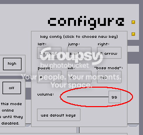

#13804 1 2007-01-31T15:43:46Z Groxx My apologies if this sounds like a stupid question... but how do you disable sound in the game, specifically on a Mac (if it's not just pulling the volume slider to 0)? I see no options in the game or in the player, and while I have an application that can redirect/mute applications, that's not really disabling it per se... is it? I'm not sure if it comes before or after the sound processing, and that may not even be the real issue (as in, it sounds like it's part of Flash sending sound, not the interpretation of the sound by the OS).
And, just so nobody asks, yes, I did search. Everything I searched for (relating to this) came up totally empty.
#292172 2 2007-01-31T16:02:13Z apg Yes, you can mute the sound by going to the Configure menu and looking at the upper-right side of the menu.

Pull the slider to 0. That will mute all sound effects caused by N, but you can still do other things with your computer (listening music, for example).

#292179 3 2007-01-31T16:22:20Z Groxx The strange thing is, though, that it seems to perform better with sound on. It's very nearly perfectly smooth, but I was hoping to get that last edge. With sound off, there's a lag EVERY time I pick up gold; with sound on, there isn't any perceptible lag (or just very small, and I'm used to the lag, so I don't see it).
#292182 4 2007-01-31T16:27:49Z apg Yes, the sound seems to affect the game performance in some mysterious way...
Quote: N Readme
Also, the above musical/sound fix seems to improve performance
on Mac and PC also -- playing a song in iTunes, Windows Media
Player or WinAmp has been effective in reducing lag for _some_ users.
Apparently the ninja enjoys listening to music!
That's... odd.
#292187 5 2007-01-31T16:35:15Z Groxx Yes, the sound seems to affect the game performance in some mysterious way..Quote: N Readme
Also, the above musical/sound fix seems to improve performance
on Mac and PC also -- playing a song in iTunes, Windows Media
Player or WinAmp has been effective in reducing lag for _some_ users.
Apparently the ninja enjoys listening to music!
That's... odd.
lol, yeah, I saw that while browsing around too. No idea why.
Still... why would having sound
decrease processor usage? And is there a way to speed it up further?